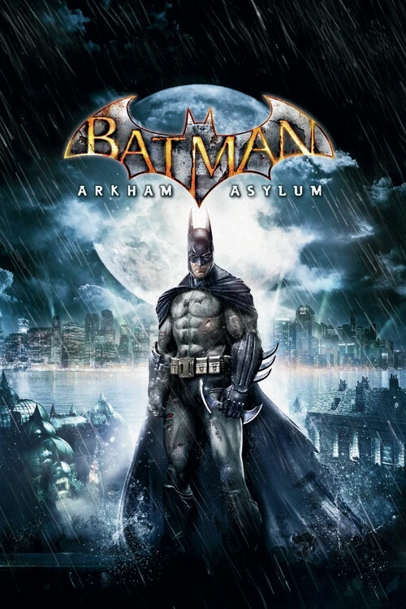

Estudio: Rocksteady Studios · Nota Metacritic: 91/100

Batman captura al Joker y lo entrega en el manicomio de Arkham, pero todo es una trampa: el Joker se escapa, toma el control del asilo y activa a sus secuaces. Batman queda atrapado en la isla con el personal y los rehenes, mientras el Joker prepara un plan con la formulación Titan para crear un ejército de monstruos.
El juego mezcla sigilo, exploración, resolviendo acertijos del Enigma y combates en grupos. Es el juego que inventó el sistema de combate Freeflow, copiado después por media industria.
© 2026 David Cabrera González · Proyecto de Lenguajes de Marcas